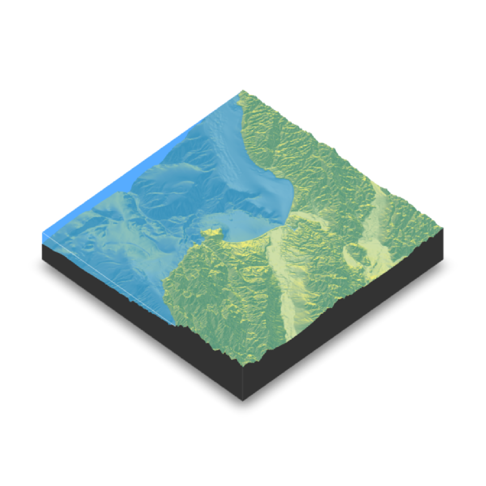
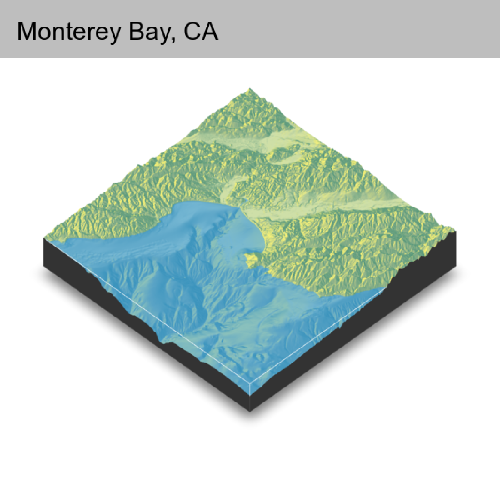
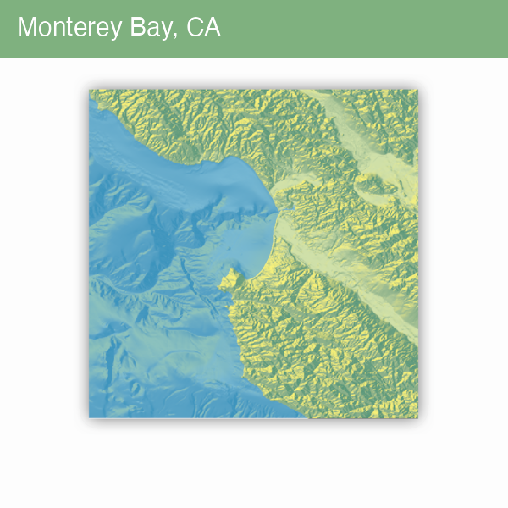
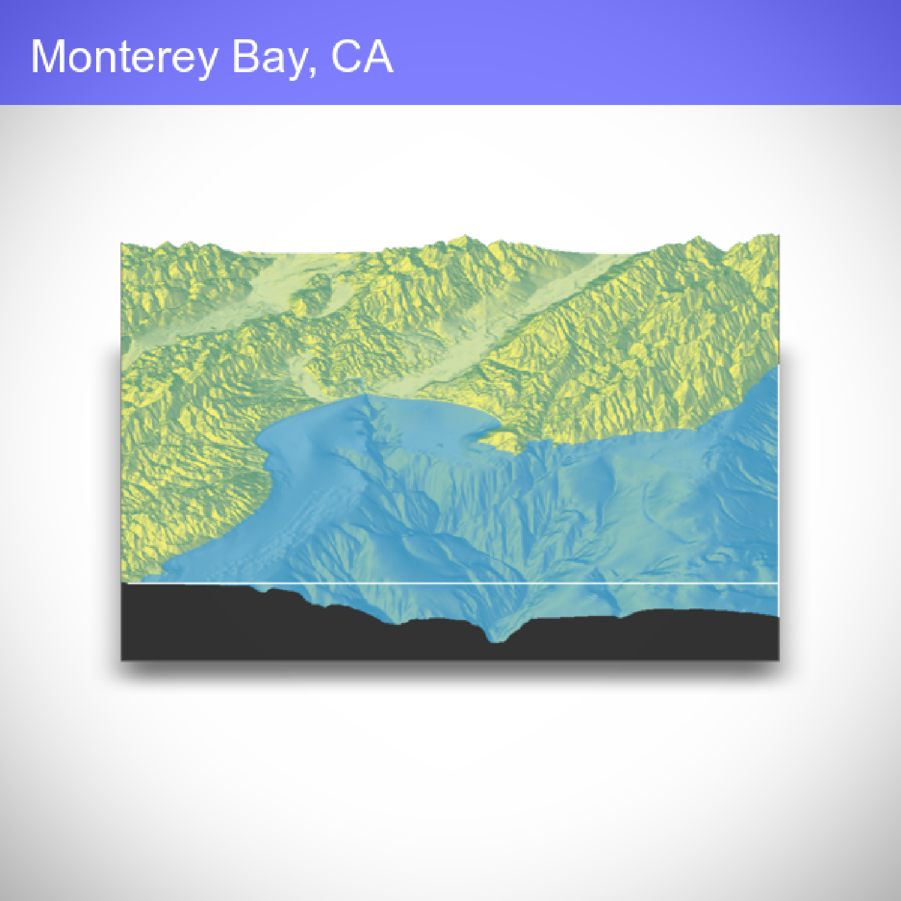
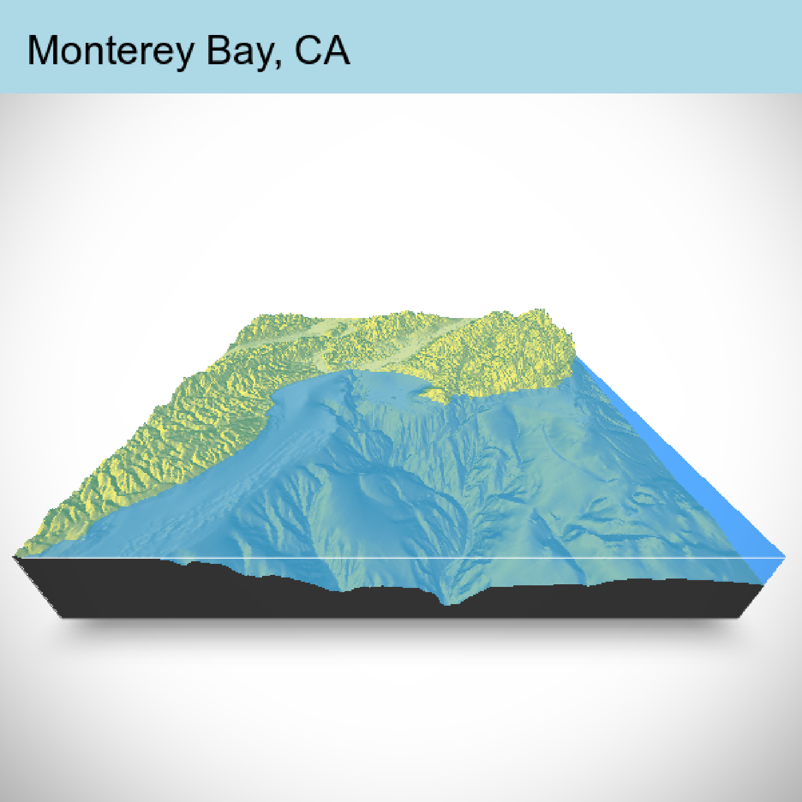

Changes the position and properties of the camera around the scene. If no values are entered, prints and returns the current values.
render_camera(
theta = NULL,
phi = NULL,
zoom = NULL,
fov = NULL,
shift_vertical = 0
)Defaults to current value. Rotation angle.
Defaults to current value. Azimuth angle. Maximum 90.
Defaults to current value. Positive value indicating camera magnification.
Defaults to current value. Field of view of the camera. Maximum 180.
Default 0. Amount to shift the viewpoint.
if(run_documentation()) {
montereybay |>
sphere_shade() |>
plot_3d(montereybay,zscale = 50, water = TRUE, waterlinecolor="white")
render_snapshot()
}

#Shift the camera over and add a title
if(run_documentation()) {
render_camera(theta = -45, phi = 45)
render_snapshot(title_text = "Monterey Bay, CA",
title_bar_color = "grey50")
}

#Shift to an overhead view (and change the text/title bar color)
if(run_documentation()) {
render_camera(theta = 0, phi = 89.9, zoom = 0.9)
render_snapshot(title_text = "Monterey Bay, CA",
title_color = "white",
title_bar_color = "darkgreen")
}

#Shift to an front view and add a vignette effect
if(run_documentation()) {
render_camera(theta = -90, phi = 30,zoom = 0.8)
render_snapshot(title_text = "Monterey Bay, CA",
title_color = "white",
title_bar_color = "blue",
vignette = TRUE)
}

#Change the field of view (fov) and make the title bar opaque.
if(run_documentation()) {
render_camera(theta = -90, phi = 30,zoom = 0.5,fov = 130)
render_snapshot(title_text = "Monterey Bay, CA",
title_color = "black",
title_bar_alpha = 1,
title_bar_color = "lightblue",
vignette = TRUE)
}

#Here we render a series of frames to later stitch together into a movie.
if(run_documentation()) {
phivec = 20 + 70 * 1/(1 + exp(seq(-5, 10, length.out = 180)))
phivecfull = c(phivec, rev(phivec))
thetavec = 270 + 45 * sin(seq(0,359,length.out = 360) * pi/180)
zoomvechalf = 0.5 + 0.5 * 1/(1 + exp(seq(-5, 10, length.out = 180)))
zoomvec = c(zoomvechalf, rev(zoomvechalf))
for(i in 1:360) {
render_camera(theta = thetavec[i],phi = phivecfull[i],zoom = zoomvec[i])
#uncomment the next line to save each frame to the working directory
#render_snapshot(paste0("frame", i, ".png"))
}
#Run this command in the command line using ffmpeg to stitch together a video:
#ffmpeg -framerate 60 -i frame%d.png -vcodec libx264 raymovie.mp4
#And run this command to convert the video to post to the web:
#ffmpeg -i raymovie.mp4 -pix_fmt yuv420p -profile:v baseline -level 3 -vf scale=-2:-2 rayweb.mp4
#Or we can use render_movie() to do this all automatically with type="custom" (uncomment to run):
#render_movie(filename = tempfile(fileext = ".mp4"), type = "custom",
# theta = thetavec, phi = phivecfull, zoom = zoomvec, fov=0)
}